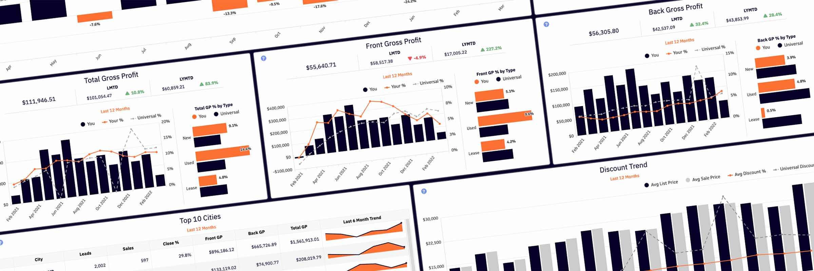
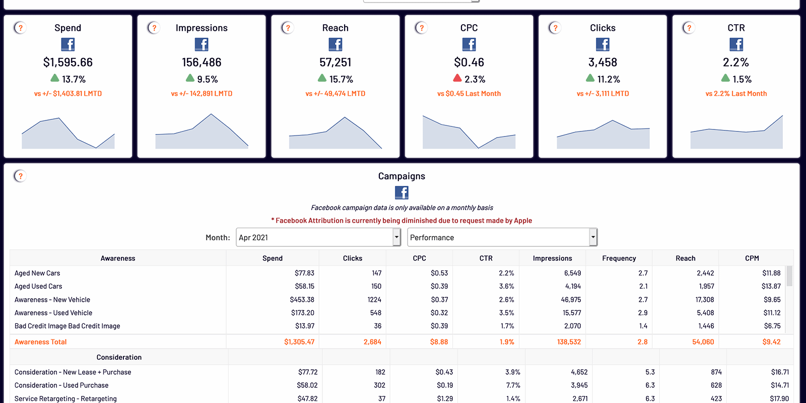
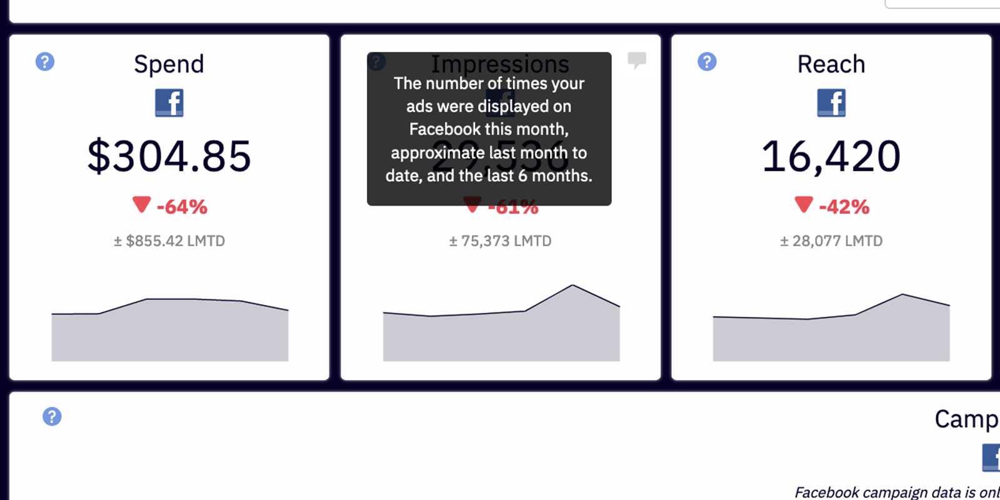
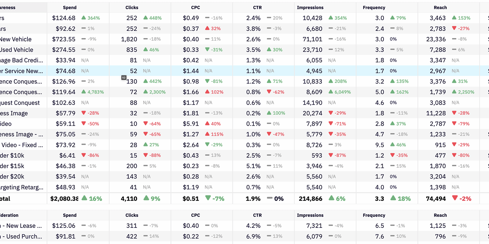
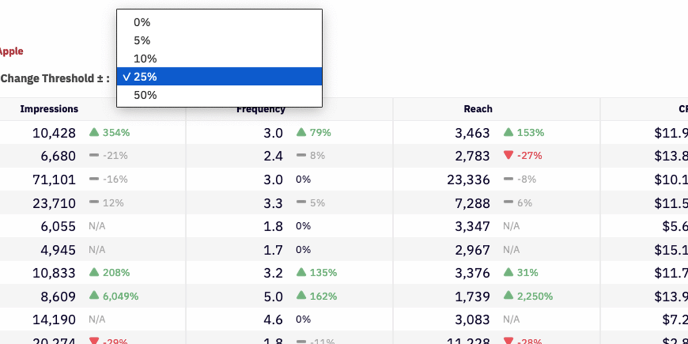

Klipfolio Design Brief
Information Overload
The Challenge
In April, 2021, I joined an organization looking to build the next generation of tools. This also means I inherited the Gen-1 tool… an analytics dashboard built in Klipfolio.
Context
Giving Klipfolio a facelift was never a priority. However, the designer in me can’t help but make a few improvements from time to time… all in an attempt to improve usability.
Fonts
If everything is important…
then nothing is important. To improve the scannability and hierarchy of the dashboards, I made some styling updates.
My Concerns
- Everything was bold (and similar in size)
- The orange text on white
- Treatment of the Helper Text

Pod Updates
Klipfolio’s WYSIWYG editor is somewhat limited… as an example, font-size is a dropdown list from XX-small to XX-large. I used the ‘out-of-the-box’ options for font-weights, sizes and colors to create a visual hierarchy. I also took the opportunity to address the Helper Text… which used to be orange text on navy blue.

Feedback
That’s a million times better.
I think the numbers stick out to me a little bit more, which is good.
The coloring and the text… it’s much easier to read.
Data Tables
My Concerns
- The small font
- The orange text as totals
- The left-right scannability of individual line items
Zebra Striping and Hover Row
The dashboard has many tables for displaying data. The first thing I did was bump the font-size up one size. Next, I opened FireFox’s Inspection Tools and added a few lines of CSS to give the table zebra stripes and a hover row. Finally, I made the totals black and bold instead of orange.

Feedback
Much better, yes. I like it. I like it a lot.
I think those are all valid. Making those changes would be beneficial.
Buffer
Another improvement was the addition of the ’Change Threshold‘ percentage dropdown. Instead of always displaying the percentage change in red or green, I proposed a “buffer percentage” that would be displayed as flat (or no change). Some users told me they only cared about large ups or downs… while others told me they wanted to see red or green every time. This solution accommodated both.

Feedback
I guess that is interesting. If you took out a bunch of these where they’re not necessary, you could then instantly highlight the ones that are necessary.
I can immediately look at the colors and my eyes would recognize that there’s more red or green, or it’s about the same.
I like the change arrows. I’m a fan of those because I like rooting for all green.
Outcome
The font and table styles were implemented across the entire dashboard. In November, 2021, I conducted an audit of the dashboards and all of the pods… and created this document, which I named The Poditlaunch.